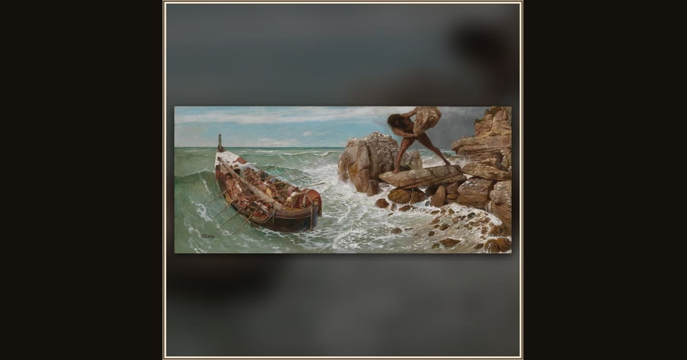

Odysseus and Polyphemus
Arnold Böcklin · 1896 · Museum of Fine Arts, Boston · Boston, USA
On a wild, stormy sea the blinded giant Polyphemus hurls a huge boulder at Odysseus's tiny ship as the hero escapes across roaring waves. Explore its place in Book IX of the Odyssey.